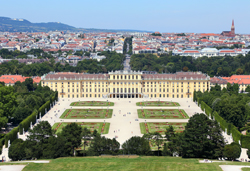
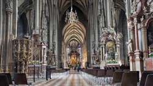
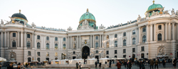
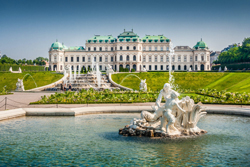
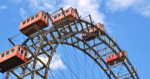
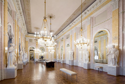
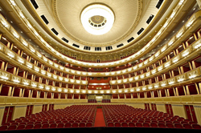
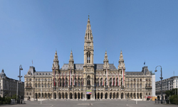
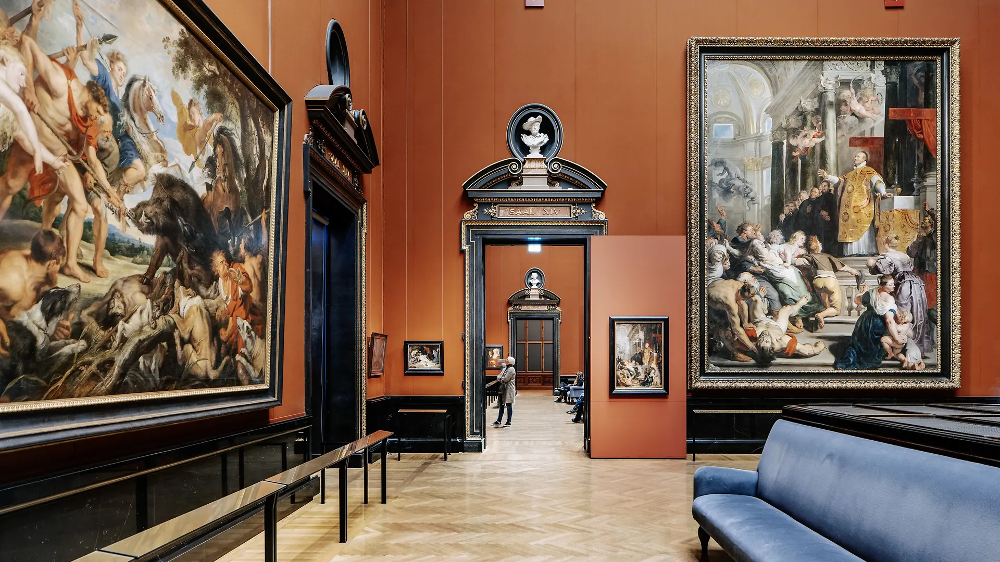
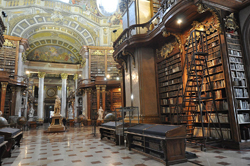

Click in any field below to hear the sentence read aloud.
Click in any field below to reveal a translation.
Wien, die Hauptstadt Österreichs, ist eine Stadt voller Geschichte, Kultur und Architektur. Es gibt zahlreiche Sehenswürdigkeiten, die Besucher aus der ganzen Welt anziehen. Im Folgenden finden Sie eine deutsche Beschreibung einiger der bekanntesten Sehenswürdigkeiten in Wien.
Vienna, the capital of Austria, is a city full of history, culture and architecture. There are numerous sights that attract visitors from all over the world. In the following you will find a German description of some of the most famous sights in Vienna.
| Das Schloss Schönbrunn ist eines der bekanntesten Wahrzeichen Wiens und eine der meistbesuchten Sehenswürdigkeiten der Stadt. Es wurde im 17. Jahrhundert errichtet und diente als Sommerresidenz der Habsburger Monarchen. Das Schloss beeindruckt mit seiner prächtigen Architektur und den weitläufigen Gärten. Besucher können das Schloss besichtigen, die prunkvollen Räume erkunden und einen Spaziergang durch den Schlosspark machen. |  |
Schönbrunn Castle is one of the most famous landmarks of Vienna and one of the most visited sights in the city. It was built in the 17th century and served as the summer residence of the Habsburg monarchs. The castle impresses with its magnificent architecture and the extensive gardens. Visitors can visit the castle, explore the magnificent rooms and take a walk through the castle park.
| Der Stephansdom ist das bekannteste gotische Bauwerk Wiens und ein weiteres Wahrzeichen der Stadt. Die imposante Kathedrale wurde im 12. Jahrhundert erbaut und ist für ihre beeindruckende Architektur und den markanten Südturm bekannt, von dem aus man einen atemberaubenden Blick über Wien hat. Besucher können den Dom besichtigen, die Katakomben erkunden oder an einer Führung teilnehmen. |  |
The Stephan's Cathedral is the most famous Gothic building in Vienna and another landmark of the city. The impressive cathedral was built in the 12th century and is known for its impressive architecture and the striking south tower, from which one has a breathtaking view of Vienna. Visitors can visit the cathedral, explore the catacombs or take a tour.
| Die Hofburg war einst die kaiserliche Residenz der Habsburger Monarchen und ist heute der Amtssitz des österreichischen Bundespräsidenten. Das riesige Gebäudeensemble umfasst prächtige Paläste, Museen und historische Räume. Besucher können die kaiserlichen Gemächer besichtigen, das Sisi Museum erkunden oder die Spanische Hofreitschule besuchen, wo die berühmten Lipizzaner-Pferde ihre Kunststücke vorführen. |  |
The Hofburg was once the imperial residence of the Habsburg monarchs and is now the official residence of the Austrian Federal President. The huge building ensemble comprises magnificent palaces, museums and historical rooms. Visitors can visit the imperial rooms, explore the Sisi Museum or visit the Spanish Riding School, where the famous Lipizzaner horses show their tricks.
| Das Belvedere ist ein barockes Schlossensemble, das aus dem Oberen und Unteren Belvedere besteht. Es wurde im 18. Jahrhundert erbaut und beherbergt heute eine beeindruckende Kunstsammlung, darunter Werke von Gustav Klimt, Egon Schiele und Oskar Kokoschka. Neben den kunsthistorischen Schätzen können Besucher auch die wunderschönen Gärten des Belvedere erkunden. |  |
The Belvedere is a baroque palace ensemble that consists of the upper and lower Belvedere. It was built in the 18th century and is now home to an impressive art collection, including works by Gustav Klimt, Egon Schiele and Oskar Kokoschka. In addition to the art historical treasures, visitors can also explore the beautiful gardens of the Belvedere.
| Der Wiener Prater ist ein beliebter Vergnügungspark und ein grünes Erholungsgebiet in Wien. Das Highlight des Praters ist das Riesenrad, eines der bekanntesten Wahrzeichen der Stadt. Besucher können eine Fahrt mit dem Riesenrad genießen und dabei einen herrlichen Blick über Wien erleben. Der Prater bietet auch zahlreiche weitere Attraktionen wie Achterbahnen, Karussells und Restaurants. |  |
The Vienna Prater is a popular amusement park and a green recreation area in Vienna. The highlight of the Prater is the Ferris wheel, one of the most famous landmarks of the city. Visitors can enjoy a ride on the Ferris wheel and experience a wonderful view of Vienna. The Prater also offers numerous other attractions such as roller coasters, carousels and restaurants.
| Die Albertina ist ein renommiertes Kunstmuseum in Wien, das sich in einem historischen Palast befindet. Die Sammlung umfasst Werke bedeutender Künstler wie Monet, Picasso, Dürer und Rubens. Neben der beeindruckenden Kunstsammlung beherbergt die Albertina auch eine große Sammlung an Grafiken und Fotografien. |  |
The Albertina is a renowned art museum in Vienna, which is located in a historic palace. The collection includes works of important artists such as Monet, Picasso, Dürer and Rubens. In addition to the impressive art collection, the Albertina also houses a large collection of graphics and photographs.
| Die Wiener Staatsoper zählt zu den führenden Opernhäusern der Welt und ist für ihre herausragenden Aufführungen bekannt. Das beeindruckende Gebäude im Stil der Neorenaissance bietet Platz für über 2.000 Zuschauer. Besucher können eine Vorstellung besuchen oder an einer Führung durch das Opernhaus teilnehmen. |  |
The Vienna State Opera is one of the leading opera houses in the world and is known for its outstanding performances. The impressive building in the style of the neo -Renaissance offers space for over 2,000 spectators. Visitors can attend a performance or take a tour of the opera house.
| Das Wiener Rathaus ist ein prachtvolles Gebäude im neugotischen Stil und Sitz des Bürgermeisters und des Gemeinderats von Wien. Das imposante Bauwerk beeindruckt mit seinen Türmen, Arkaden und Verzierungen. Vor dem Rathaus findet jedes Jahr der berühmte Wiener Weihnachtsmarkt statt. |  |
The Vienna town hall is a magnificent building in the neo -Gothic style and seat of the mayor and the municipal council of Vienna. The impressive building impresses with its towers, arcades and decorations. The famous Viennese Christmas market takes place every year in front of the town hall.
| Das Kunsthistorische Museum zählt zu den bedeutendsten Kunstmuseen der Welt und beherbergt eine umfangreiche Sammlung von Kunstwerken aus verschiedenen Epochen. Besucher können Meisterwerke von Künstlern wie Rembrandt, Vermeer, Velázquez und Tizian bewundern. |  |
The Kunsthistorisches Museum is one of the most important art museums in the world and houses an extensive collection of works of art from different epochs. Visitors can admire masterpieces of artists such as Rembrandt, Vermeer, Velázquez and Titian.
| Der Prunksaal ist Teil der Österreichischen Nationalbibliothek und beeindruckt mit seiner prächtigen barocken Architektur und den zahlreichen Büchern und Handschriften. Besucher können die beeindruckende Bibliothek besichtigen und in die Welt des Wissens eintauchen. |  |
The splendor room is part of the Austrian National Library and impresses with its magnificent baroque architecture and the numerous books and manuscripts. Visitors can visit the impressive library and immerse themselves in the world of knowledge.